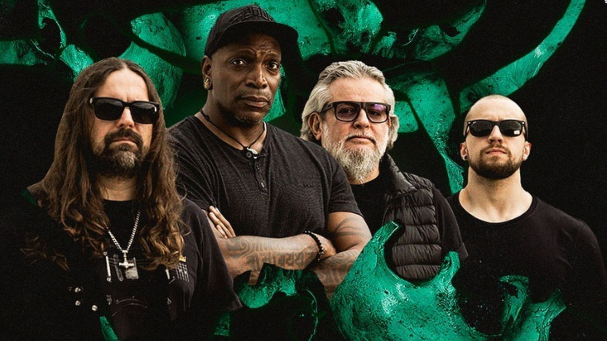

Grand Theft Auto VI - Conteúdos mais recentes
Nos últimos dois meses, o Coringa da Flórida da vida real gravou diversos vídeos relatando sua revolta com a Rockstar criar um personagem inspirado nele sem sua autorização, ameaçando diversas vezes a gigante dos games de processo caso o estúdio não aceite "conversar" com ele e pagá-lo pelo que ele julga merecer receber por inspirar um personagem do jogo. A Rockstar, por sua vez, sempre ignorou os pedidos do "Coringa".
Agora, porém, Lawrence Sullivan mudou o tom de sua abordagem e disse que deseja trabalhar com a Rocksar em GTA 6, mais especificamente sendo o ator de voz do "Coringa da Flórida" do game. Em seu perfil no TikTok, Sullivan disse que não deseja processar a Rocksar, mas insiste em querer conversar com o estúdio.
Ler mais

Sepultura anuncia fim da banda e turnê de despedida a partir de 2024
Maior nome do heavy metal brasileiro, o Sepultura fará sua última turnê a partir de 2024. Os atuais integrantes Derrick Green, Paulo Jr., Andreas Kisser e Eloy Casagrande se reuniram nesta sexta-feira (8), em São Paulo, para anunciar o fim das atividades do grupo.
A última série de shows vai durar 18 meses e passará por países da América Latina e Estados Unidos. No Brasil, já foram marcadas oito apresentações (veja as datas ao fim desta reportagem).
"O Sepultura vai parar. Vai morrer. Uma morte consciente e planejada", disse a banda, em um comunicado.
"Estamos felizes e muito agradecidos com tudo que aconteceu na nossa história, fizemos grandes álbuns e shows, cultivamos amizades, conhecemos nossos ídolos, ajudamos a colocar o metal brasileiro no mapa mundial e, agora, deixamos a cena com o sentimento de dever cumprido."
Ler mais

Morre Carl Weathers, o Apollo Creed de 'Rocky', aos 76 anos
Carl Weathers faleceu nesta quinta-feira (1), aos 76 anos, enquanto dormia, em sua casa em Los Angeles, nos Estados Unidos. A informação foi confirmada pelo agente do ator em comunicado divulgado à imprensa.
Conhecido por interpretar o boxeador Apollo Creed nos quatro primeiros filmes da saga "Rocky Balboa", estrelada por Sylvester Stallone, Weathers era uma cara conhecida em Hollywood. Ele também participou de obras como "O predador", com Arnold Schwarzenegger, e "Um maluco no golfe", com Adam Sandler.
Nos últimos anos, marcou presença no elenco da série "The Mandalorian", spin-off do universo "Star Wars" para o Disney+. Na série, o ator interpretou o personagem Greef Karga, que lhe rendeu uma indicação ao Emmy de melhor ator convidado para série de drama.
Ler mais